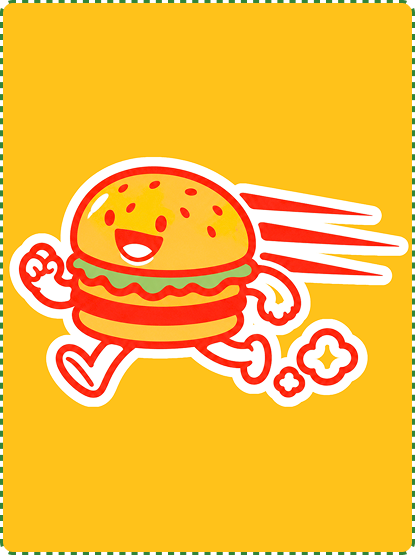
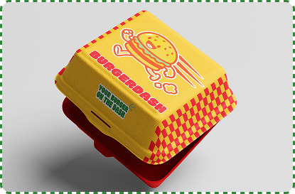
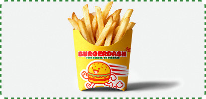
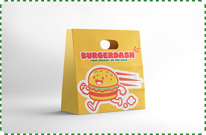
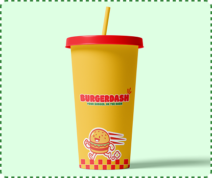

Burgerdash
BurgerDash is a fun, fast-food burger brand built around speed, energy, and convenience. The goal was to create a bold visual identity that would feel playful and memorable while working across different packaging and brand touchpoints.
creative direction
The Decision: The identity combines a bold yellow, red, and green palette with rounded typography, a running burger mascot, and playful graphic elements to create a fun, energetic look across the packaging.
The Outcome: The result is a playful and cohesive visual identity that brings BurgerDash to life across burger boxes, wrappers, fries packs, takeaway bags, and drink cups.




